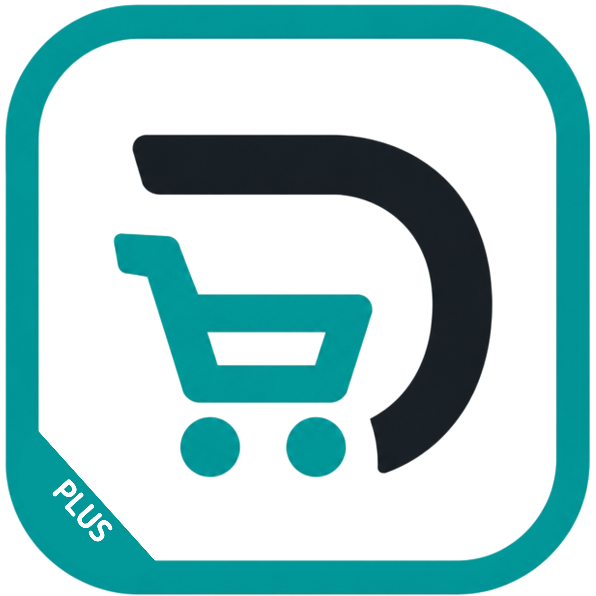

DAYO
Aplikasi kasir dan pengelolaan stok untuk warung yang dirancang agar sederhana digunakan, dapat berjalan secara offline, dan tidak membutuhkan langganan bulanan.
PORTOFOLIO ABIMS.ID
Kumpulan aplikasi, website, dan produk digital yang dikembangkan oleh Abims.id.
Aplikasi kasir dan pengelolaan stok untuk warung yang dirancang agar sederhana digunakan, dapat berjalan secara offline, dan tidak membutuhkan langganan bulanan.

Aplikasi kasir untuk outlet dan stand UMKM dengan pengelolaan karyawan, shift, kas awal, stok, transaksi, laporan, dan backup data.